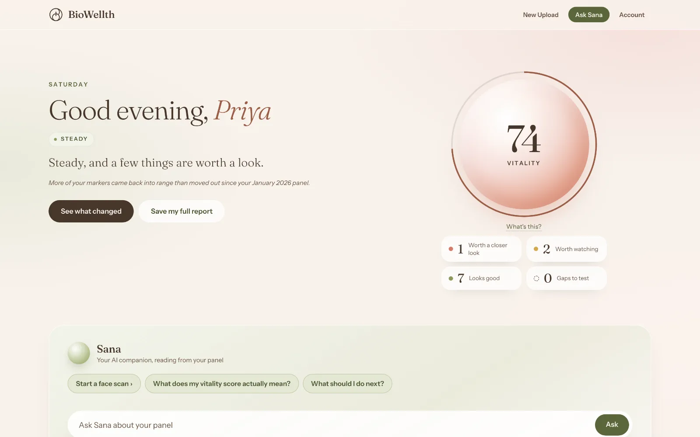
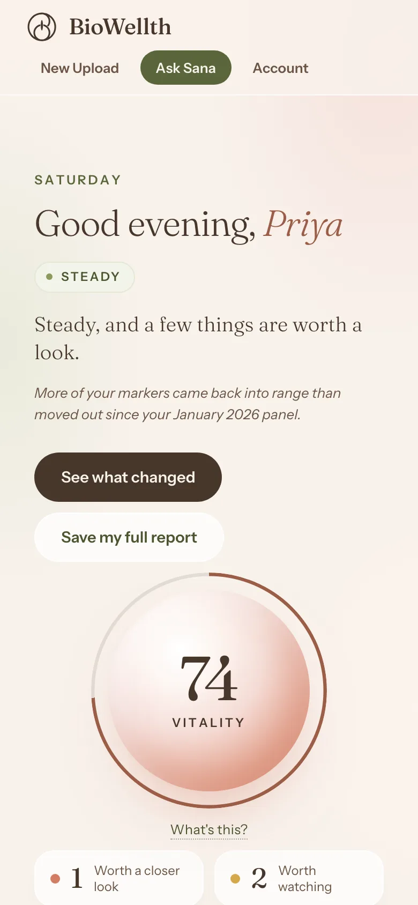
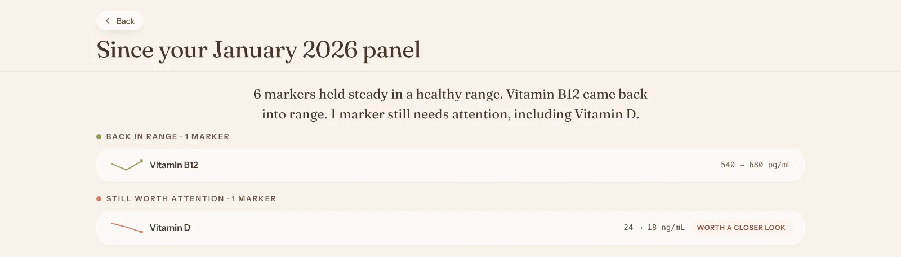

01 · The panel
170+
markers across 21 categories, drawn at home
Preventive health for South Asian women
We test the markers your checkup skips with a home blood draw, read them for where you feel your best, not just okay, and track them over time. Sana, your own personal companion, explains what they mean. Already have reports? You can upload them too.
Same result, two readings
Illustrative example. Not medical advice.
Your checkup skipped these
Ferritin · last 3 panels
In range on every report. Falling across all three. Retest with us and we read every panel together, so you see which way you're moving.
01 · The panel
markers across 21 categories, drawn at home
02 · Timed to your cycle
Drawn on the right day of your cycle.
03 · Your biology
Built for South Asian women, not averaged away.
What you get back
Every result explained in plain words, and tracked from one panel to the next. Sana reads it with you.



Each new panel is read against your last one, so a slow slide shows up before it becomes a problem.
Sample report with illustrative data.
Why am I so tired lately?
Your ferritin went from 74 to 22 across three panels. Each one was "in range", but that slide often tracks with low energy. Ferritin and hsCRP are worth raising with your doctor.
Illustrative conversation.
My mother was tired for three years. Every checkup said normal. Nobody ran ferritin. When someone finally did, the report read it as normal too.
Early access opens in small groups.
We'll email you about early access. You can remove yourself at any time. Privacy Policy.
Be one of the first women to use BioWellth.
Early access opens in small groups.
We'll email you about early access. You can remove yourself at any time. Privacy Policy.
The markers a standard checkup skips, drawn at home and read for where you feel your best, with interpretation built for South Asian women, then tracked across every panel.
Most standard panels skip ferritin, Free T3, morning cortisol, and other markers linked to fatigue, cycle issues, and brain fog. We flag what was missed.
Encrypted in transit, never sold, and you can delete everything at any time. You own it.
Your health data is yours. We do not sell your data or share it for advertising. We use service providers who process it on our behalf, under contract, only to run the service. Your reports are encrypted in transit, access is scoped to your account, and you can delete everything at any time. We're building a health tool, not a data business.